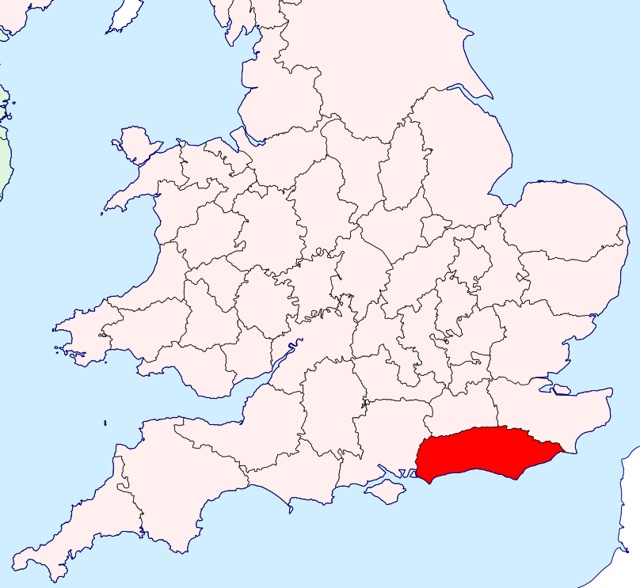
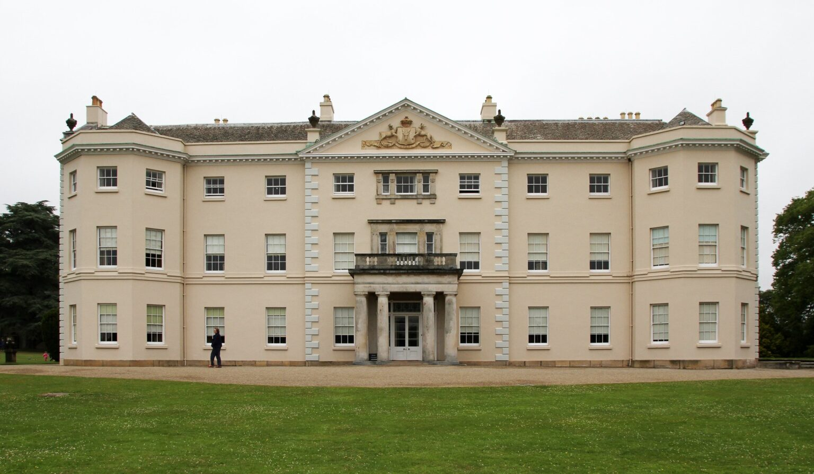
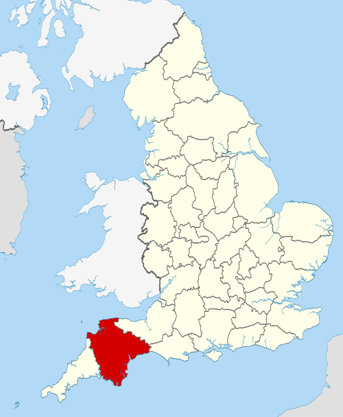
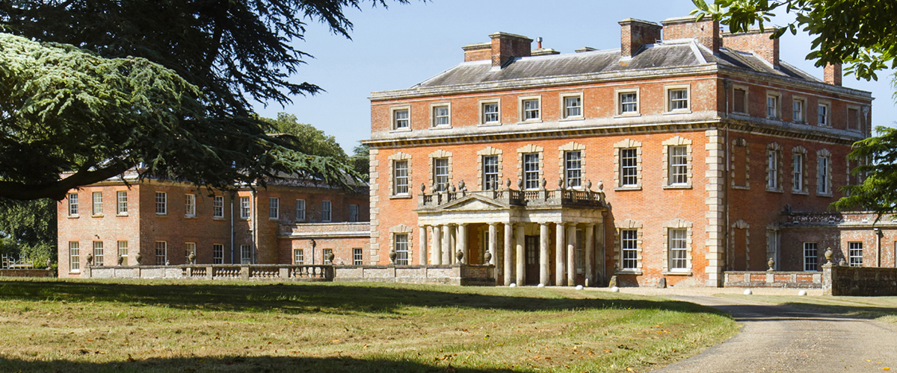
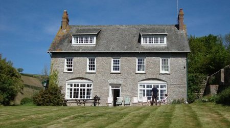

What locations were mentioned in this chapter? |
|
|---|---|
|  | Sussex Sussex is an area within South East England that was historically a kingdom and, later, a county. It includes the ceremonial counties of East Sussex and West Sussex. |
|  | Norland ParkNorland Park is an estate located in Sussex, which has belonged to the Dashwood family for generations. |
|  |
DevonshireDevon, historically also known as Devonshire, is county in South West England. |
|  | Barton ParkBarton Park is an estate located in Devonshire. It is owned by Sir John Middleton, a relative of Mrs. Dashwood's. Sir John offers the use of the small cottage located on the grounds when he hears of her predicament with Norland Park. |
|  | Barton Cottage Barton Cottage is a small house where Mrs. Dashwood and her daughters lived after being evicted from Norland Park. It is located on the outskirts of Barton Park, the estate owned by Sir John and Lady Middleton. Sir John, Mrs. Dashwood's cousin, offered the house to her at an "uncommonly moderate" rent when he heard she had been widowed and left in financial difficulty. |